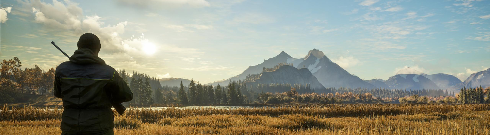

The Basics of Whitetail Deer Hunting in Northern Indiana

Hunting has been an American tradition for generations, and it has served as a connecting link between nature and humans throughout urbanization and industrialization. Whether for sport or survival, hunting continues to maintain a strong following and a passion for the outdoors. While it has a lot to offer, hunting can be intimidating for beginners with little background knowledge. This website serves as a starting point for those wishing to get involved in hunting, specifically in the Northern Indiana area.